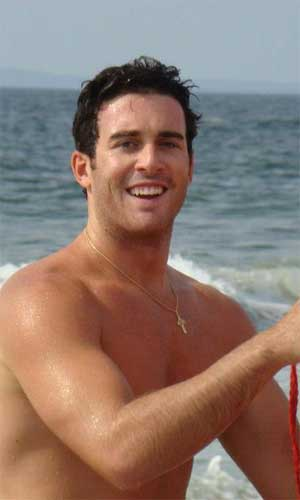

Manhattan College Performing Arts!
|
Manhattan College Pipes and Drums Drum Major: Michael Scire  |
The Manhattan College Pipes and Drums was formed in 1981 under the guidance of Brother Kenneth Fitzgerald, FSC, and the musical training of Captain Robert Hogan ’82, of the Pipes and Drums of the NYPD Emerald Society. Membership is open in at the beginning of each semester to any student, faculty or staff member, alumnus or alumna. We only require that you have the ability to play or desire to learn in a two-year program (next learning program: fall 2014) We march in almost every St. Patricks Day parade in the New York Metro area, including the parade in Manhattan, requirement is mandatory for these parades. We also offer a trip to Florida to stay with alumni and play in the St. Patricks Day Parade down there. |
|---|---|